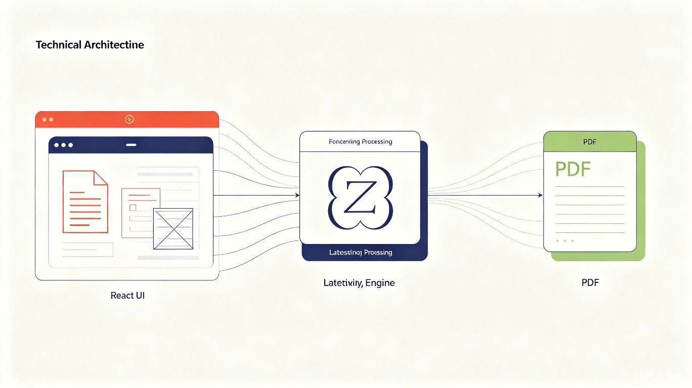
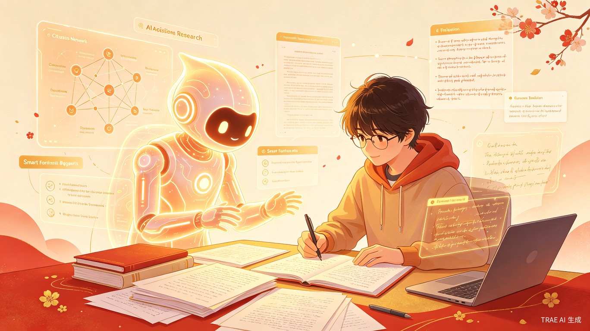

01项目缘起
每一位硕士研究生在毕业前夕，都会面临一个共同的困境：论文内容已经打磨完毕，却被繁琐的格式要求困在排版的泥潭中。字体、字号、行距、页边距、参考文献格式……这些看似细枝末节的要求，却足以消耗数天的宝贵时间。
学术的本质是思想的交流与传承，而格式只是承载思想的容器。当容器成为负担，我们便需要更好的工具来解放创造力。
为什么要做这个项目？
中文学术论文有着严格的格式规范，涉及封面、中英文摘要、目录、正文、参考文献、致谢、附录等多个模块，每个模块都有细致的排版要求。传统方式下，学生需要手动在 Word 中调整每一处格式，或者学习复杂的 LaTeX 语法——前者耗时且容易出错，后者学习曲线陡峭。
Thesis Builder 的诞生，正是为了解决这一痛点。它将 LaTeX 强大的排版能力与现代 Web 技术的便捷性相结合，通过可视化的编辑界面，让不具备 LaTeX 基础的用户也能生成符合规范的专业论文。
项目的意义与价值
降低技术门槛
将 LaTeX 的复杂性封装在可视化界面之后，让非技术背景的文科生也能轻松上手，专注于论文内容本身。
节省宝贵时间
从数天的手动排版缩短至数分钟，让研究生将更多精力投入学术研究和论文内容的深度打磨。
保障数据隐私
所有数据仅存储在浏览器本地，不上传任何服务器，符合 GDPR、CCPA 及中国个人信息保护法规。
提升排版质量
基于 LaTeX 的专业排版引擎，输出质量远超 Word，确保论文在视觉上达到学术出版级别。
02核心功能模块
Thesis Builder 采用模块化设计理念，将论文的各个组成部分拆解为独立的编辑单元，用户可像搭积木一样逐步构建完整的论文结构。
论文结构全景
graph TB
A[Thesis 论文] --> B[Cover 封面]
A --> C[Abstract 摘要]
A --> D[Chapters 章节]
A --> E[References 参考文献]
A --> F[Acknowledgement 致谢]
A --> G[Appendices 附录]
B --> B1[学校信息]
B --> B2[论文题目]
B --> B3[作者信息]
B --> B4[导师信息]
C --> C1[中文摘要]
C --> C2[英文摘要]
C --> C3[关键词]
D --> D1[一级章节]
D --> D2[二级章节]
D --> D3[三级章节]
D1 --> D1a[段落]
D1 --> D1b[公式]
D1 --> D1c[表格]
D1 --> D1d[图片]
E --> E1[期刊论文]
E --> E2[专著]
E --> E3[学位论文]
E --> E4[会议论文]
E --> E5[网页]
E --> E6[标准]
功能模块详解
1. 基本信息编辑
涵盖论文封面所需的所有信息字段：学校名称、论文题目（中英文）、作者姓名、学院专业、导师信息、完成日期等。所有字段均采用表单式输入，实时校验，确保信息完整性。
2. 摘要与关键词
支持中英文摘要的独立编辑，提供关键词标签管理功能。用户可自由添加、删除、拖拽排序关键词，系统会自动生成符合格式要求的摘要页面。
3. 章节构建器 核心功能
支持三级章节结构（章/节/小节），每级章节可独立管理。内容块支持四种类型：
-
✓
段落文本支持富文本编辑，内置引用标记系统，可自动转换为 LaTeX 超链接
-
✓
数学公式支持 LaTeX 公式语法，实时预览渲染效果
-
✓
表格可视化表格编辑器 + LaTeX 代码模式双模式切换，支持复杂表格结构
-
✓
图片支持图片上传、Caption 标注、引用标记，自动处理图片路径
4. 参考文献管理 GB/T 7714
内置六种参考文献类型（期刊、专著、学位论文、会议、网页、标准），支持 GB/T 7714-2015 标准格式自动生成。提供拖拽排序、批量导入、格式校验等功能，彻底解决参考文献格式难题。
5. 致谢与附录
致谢支持多段落编辑，附录支持独立章节管理。两者均可通过可视化界面完成，无需接触任何 LaTeX 代码。
6. 导出与编译
支持多种导出格式：
| 导出格式 | 用途 | 技术实现 |
|---|---|---|
| 最终提交稿 | 后端 XeLaTeX 编译，支持中文与 gbt7714 宏包 | |
| LaTeX 源码 | 二次编辑 / 版本控制 | 完整 .tex 项目打包下载 |
| Word | 导师审阅 / 协作编辑 | 前端 docx 生成器，保留基本格式 |
| JSON | 数据备份 / 跨设备迁移 | 结构化数据导出，支持存档恢复 |
7. 历史存档
自动保存编辑历史，支持最多 10 个存档点。用户可随时回溯到任意历史版本，避免误操作导致的数据丢失。
03技术架构
Thesis Builder 采用前后端分离架构，前端负责用户交互与数据管理，后端专注于 LaTeX 编译与 PDF 生成，两者通过 RESTful API 协同工作。

前端技术栈
React 19 + TypeScript
采用最新 React 版本，配合 TypeScript 严格类型检查，确保代码质量与可维护性。
Ant Design 6
企业级 UI 组件库，提供丰富的交互组件，配合日式和风主题定制，打造独特视觉体验。
Zustand 状态管理
轻量级状态管理方案，配合 persist 中间件实现 localStorage 持久化，数据离线可用。
Vite 构建工具
极速开发体验，支持 HMR 热更新，优化生产构建输出。
后端技术栈
FastAPI
高性能 Python Web 框架，自动生成 OpenAPI 文档，支持异步处理。
Docker 容器化
完整 LaTeX 环境封装，一键部署，消除环境依赖问题。
XeLaTeX 编译
支持 Unicode 与系统字体，完美处理中文排版，内置 gbt7714 参考文献宏包。
数据流设计
sequenceDiagram
participant U as 用户
participant UI as React UI
participant S as Zustand Store
participant L as LaTeX生成器
participant API as FastAPI
participant D as Docker/XeLaTeX
U->>UI: 编辑论文内容
UI->>S: 更新状态
S->>S: 持久化到localStorage
U->>UI: 点击预览
UI->>L: 生成LaTeX源码
L->>UI: 返回.tex内容
UI->>U: 代码高亮展示
U->>UI: 点击导出PDF
UI->>API: POST /compile/pdf
API->>D: 执行xelatex编译
D->>API: 返回PDF文件
API->>UI: 返回下载链接
UI->>U: 下载PDF
格式引擎设计
项目核心创新之一在于 FormatEngine（格式引擎）的设计。所有 LaTeX 格式配置均通过该引擎统一管理，禁止任何硬编码。引擎支持：
-
✓
字体映射系统SimSun/宋体、SimHei/黑体、FangSong/仿宋、KaiTi/楷体等中文字体自动映射为 LaTeX 命令
-
✓
字号映射系统二号、小二号、三号、小三号等中文字号自动映射为对应的 pt 值和 \zihao 命令
-
✓
格式预设系统内置中文学术论文格式预设，未来可扩展支持更多高校模板
-
✓
验证与合并格式设置合法性校验，支持增量更新与全量重置
04设计理念与用户体验
Thesis Builder 的界面设计深受日式和风美学影响，追求"禅意、留白、自然"的视觉体验，让用户在编辑论文时感受到宁静与专注。
视觉设计哲学
设计团队从日本传统美学中汲取灵感，将 侘寂（Wabi-sabi）与 间（Ma）的概念融入界面设计。色彩上选用温润的米白、朱红、靛蓝、抹茶绿等传统和色，营造典雅而不张扬的视觉氛围。
好的设计是尽可能少的设计。当界面不再争夺用户的注意力，内容本身便会发光。
交互设计亮点
| 设计元素 | 实现方式 | 用户体验价值 |
|---|---|---|
| 侧边栏大纲 | 实时同步论文结构，支持点击跳转 | 全局视野，快速定位，避免迷失在长文档中 |
| 拖拽排序 | @dnd-kit 实现章节与参考文献拖拽 | 直观调整顺序，符合用户心智模型 |
| 折叠展开 | 章节内容块支持折叠，减少视觉干扰 | 聚焦当前编辑区域，降低认知负荷 |
| 微交互动效 | 悬停浮起、点击按压、渐入动画 | 提供操作反馈，增强界面活力与品质感 |
| 校徽水印 | 固定背景水印，低透明度 | 强化品牌归属感，增添学术仪式感 |
| 响应式布局 | 适配桌面与平板设备 | 多设备可用，随时随地编辑论文 |
隐私优先原则
在数据安全日益重要的今天，Thesis Builder 坚持"数据不上云"的原则。所有论文内容仅存储在用户浏览器的 localStorage 中，后端服务仅负责 LaTeX 编译，不持久化任何用户数据。这一设计不仅保护了学术成果的隐私安全，也确保了用户在无网络环境下仍可正常编辑。
05未来优化方向
Thesis Builder 目前完成了从 0 到 1 的跨越，未来将从功能完善、生态扩展、智能化三个维度持续进化，目标是成为中文论文排版领域的标杆工具。

发展路线图
具体优化方向
功能完善
- 多高校模板库（北大、清华、复旦等）
- 图表编号自动管理（图1-1、表2-1）
- 页眉页脚动态配置
- 目录深度自定义
- 脚注与尾注支持
- 批量图片上传与自动压缩
协作与同步
- 云端同步（可选，加密存储）
- 导师审阅批注模式
- 版本对比与合并
- 多人实时协作编辑
- 评论与讨论功能
- 修订模式追踪
AI 赋能
- 智能摘要生成与润色
- 语法纠错与学术用语建议
- 参考文献自动推荐
- 格式合规性自动检查
- 查重预检与相似度分析
- 论文结构优化建议
生态扩展
- 学术社区与论文分享
- 期刊投稿格式一键转换
- LaTeX 模板市场
- 插件系统与 API 开放
- 移动端 App 开发
- 国际化多语言支持
技术债务与重构计划
随着项目发展，以下技术层面的优化将被提上日程：
-
✓
组件库抽离将日式和风 UI 组件抽离为独立 npm 包，供其他项目复用
-
✓
测试覆盖补充单元测试与 E2E 测试，确保核心功能稳定性
-
✓
性能优化大型论文渲染性能优化，虚拟滚动、懒加载等策略
-
✓
PWA 支持渐进式 Web 应用，支持离线编辑与桌面端安装
技术的终极目标不是取代人，而是让人更好地成为自己。我们希望 Thesis Builder 能成为每一位学者背后沉默而可靠的伙伴。
06结语
从解决一个具体的排版痛点出发，Thesis Builder 正在成长为一款有温度、有追求的学术工具。它不仅是一个软件，更是对"技术应服务于人"这一信念的实践。
在这个信息爆炸的时代，学术写作仍然需要沉淀与专注。我们希望 Thesis Builder 能够守护这份专注——让学者不再为格式所困，让思想自由流淌，让知识优雅传承。
感谢每一位使用者的信任与反馈，也欢迎更多开发者加入开源社区，共同打造更好的学术工具生态。
Made with ❤ by aheart_Yan
中文学术论文排版工具 · Thesis Builder